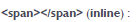
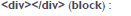
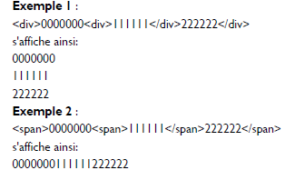
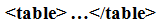
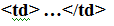
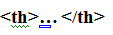
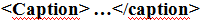

- Structure de base d'une page HTML5
- L'en-tête head et le corps body
- L'encodage (charset)
- Le titre principal de la page
- Les paragraphes
- La mise en forme du texte
- Les titres
- Les listes
- Les liens
- Insertion d'une image
- Les balises structurantes de HTML5
- Les balises de type block et inline
- Les balises universelles
- Les tableaux *Diviser un tableau *Fusionner un tableau
- Les objets de formulaire
- Les formats audio
- Les formats vidéo
- Bloc
Une balise de type block sur la page web crée automatiquement un retour à la ligne avant et après.La page web sera en fait constituée d'une série de blocs les uns à la suite des autres.Aussi, il est possible de mettre un bloc à l'intérieur d'un autre. Exemple:'p','h1','footer'
- Inline
Une balise inline ne crée pas de retour à la ligne, le texte qui se trouve à l'intérieur s'écrit donc à la suite du texte précédent, sur la même ligne.Une balise de type inline se trouve obligatoirement à l'intérieur d'une balise block. Exemple:'a','em','/img'
Les balises Universelle :
Il existe deux balises génériques, ces deux balises sont des conteneurs qui sont destinés à structurer le contenu.
La seule différence entre les deux est que l'une d'elle est inline et l'autre est block :


*Introduit un saut de ligne. *Et sert à ordonner le contenu de la page
Exemple:

Les tableaux :
- Les tableaux simples

C'est la balise qui permet d'indiquer le début et la fin d'un tableau.
Indique le début et la fin d'une ligne du tableau.

Indique le début et la fin du contenu d'une cellule.

Indique le début et la fin du contenu d'une cellule titre.
En HTML, un tableau se construit ligne par ligne. Dans chaque ligne 'tr', on indique le contenu des différentes cellules 'td' ou 'th'.
Pour ajouter un titre pour le tableau, il faut utiliser cette balise